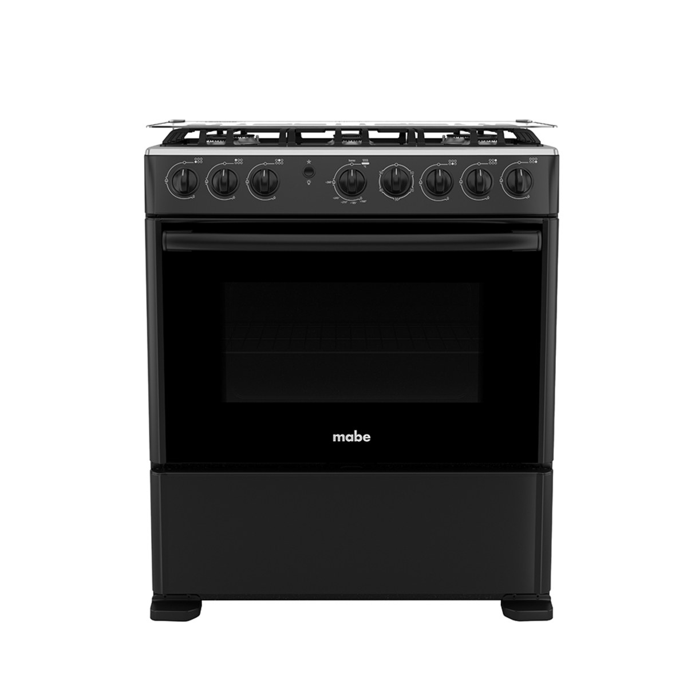

Por qué y cómo darle mantenimiento a tu cocina Mabe, punto por punto, para alargar su vida útil y reducir el riesgo de fallas mayores en Costa Rica.

Después de derrames o hervores, retira las parrillas y limpia los orificios del quemador con un cepillo suave o un alfiler fino. Los residuos de comida son la causa más común de que la llama salga amarilla o con puntas irregulares en vez de un azul uniforme, y con el tiempo pueden obstruir el paso de gas de forma más seria.
Por qué importa: Un residuo de comida tan pequeño como una gota reseca puede ser la diferencia entre una llama azul pareja y una amarilla e irregular.
Busca grietas, zonas resecas o partes hinchadas a lo largo de toda la manguera, no solo en las conexiones. El material se deteriora con la exposición al calor y al tiempo, y una manguera visiblemente desgastada debe cambiarse de inmediato, sin esperar a que aparezca un olor a gas.
Por qué importa: Una manguera que falla no avisa antes: por eso la revisión visual regular es la única forma real de anticiparse.
Aplica una mezcla de agua con jabón sobre la manguera y las conexiones del cilindro o tanque. Si aparecen burbujas, hay una fuga en ese punto exacto. Haz esta prueba al menos una vez al año, y de inmediato si notas cualquier olor a gas.
Por qué importa: Es la única forma segura de buscar una fuga; el fósforo o el encendedor nunca deben usarse para esto.
Limpia el interior del horno después de derrames o al menos una vez al mes con uso normal. La grasa quemada repetidamente forma una capa que retiene calor de forma desigual, lo que con el tiempo hace que el termostato reciba una lectura de temperatura distinta a la real.
Por qué importa: La grasa acumulada no es solo un tema de estética: con el calor genera humo y puede afectar la lectura del termostato.
Gira cada perilla ocasionalmente y nota si alguna presenta resistencia excesiva, se atasca en un punto, o no regresa bien a la posición de apagado. Detectarlo a tiempo evita quedarte con un quemador que no cierra bien, lo cual sí es un riesgo de seguridad.
Por qué importa: Una perilla dura o que traba es la primera señal, semanas antes de que falle del todo, de que la válvula interna necesita revisión.
La forma más rápida de agendar: escríbenos ahora y te confirmamos disponibilidad para tu zona en minutos, sin llamadas ni esperas.
Escríbenos por WhatsApp o llama directamente. Respondemos de lunes a sábado, de 7:00am a 6:00pm.